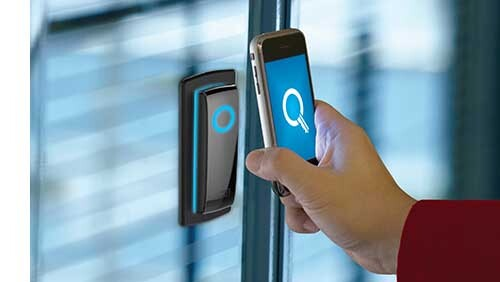
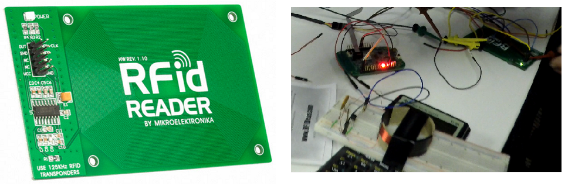
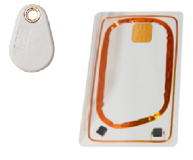
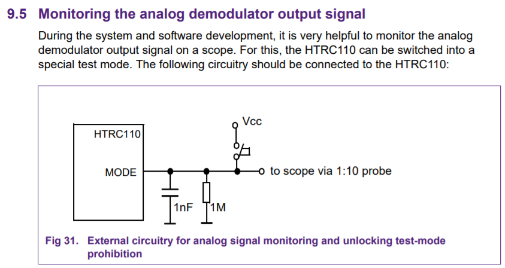
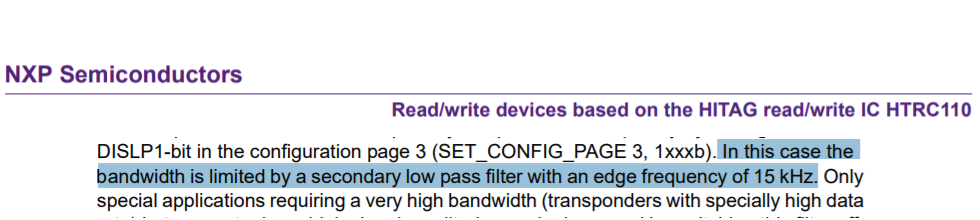
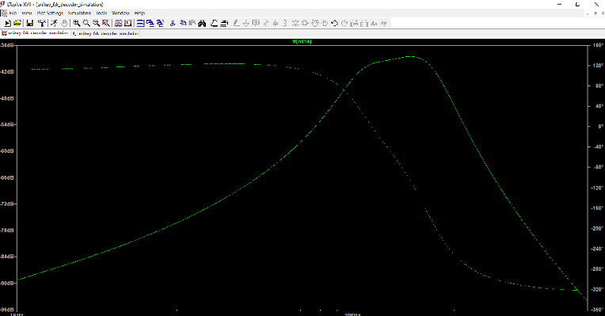
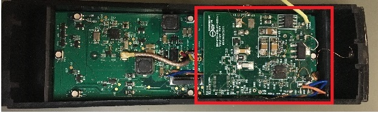
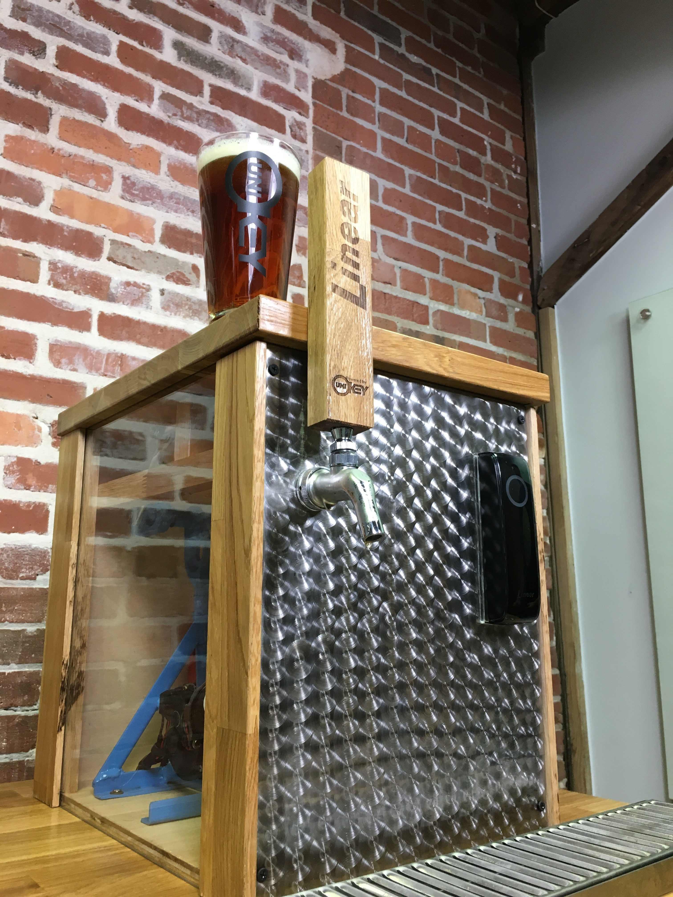

Photo by Linear
Photo by Linear

BluePass multi-technology readers (Bluetooth and 125 kHz card & Fob compatible) can operate with door controllers that support Wiegand readers. They can be installed using the existing wiring offering a seamless transition from legacy credentials to mobile credentials.
For product info, please visit the NortekControl website.
Product Development
Adding Bluetooth support to the reader was a straightforward process with our existing mobile development kit and web services. On the hardware side, our standard BLE module was redesigned to fit inside the standard “Mullion” enclosure.
One extra key requirement for the multi-technology reader was being able to support 125 kHz proximity legacy credentials. Although our partners are pushing to move end users to the mobile credential ecosystem, it was required to have support for legacy cards in locations with big legacy deployments.
Challenges
Our first protoype used a custom integrated circuit from NXP to read the card data. From a hardware perspective, this approach was ideal due its compact size and low part count requirement. Moreover, the integrated circuit performed demodulation, signal conditioning and analog filtering in a single package.

After these preliminary tests, the hardware team came up with a new printed circuit board inspired on the breadboard circuit. In house testing with cards looked promising therefore beta units were assembled for selected customers. After a few weeks of field testing, we learned that some sites were experiencing issues with fobs. Fobs use the same tag transponder chip used in cards but they are typically carried in keyrings.

Actions
Our first hunch was the smaller coil area of the fob might not be inducing enough energy to power the chip tag. Inspecting the induced voltage on the tag chip was not going to be an easy task, therefore we modified the reader side. A simple solution was to increase the coil supply voltage in order to radiate a stronger field. A small increase on reliability was noticed but further testing revealed some negative side effects such as frequency harmonics on the received signal. Field testing showed that overall read range was still not reliable therefore this initiave was abandoned.

Further research revealed an unknown operation mode to monitor the “raw analog signal” on the proximity decoder. Using an oscilloscope and our firmware decoder, a line was used to trigger the oscilloscope on each syncronization frame. This was a key quality measurement of the received signal that would allow us to benchmark the overall system. Testing fobs showed a weaker signal than the one generated by cards. This was evidence that the coil size did have an impact on the signal amplitude. After some experimentation, a firmware build was put together to alternate the decoder gain while scanning for cards and fobs. This approach solved the issue around the coil size differences but we were still experiencing data decoding errors.

Now our attention was turned to the demodulator frequency response. Fobs and cards encode their data using Frequency-shift keying (FSK) modulation with a maximum value of 15.625 kHz. Although the decoder datasheet listed a set of SPI commands to disable all the internal filtering, our tests results did not align with this claim. Later on we found an application note describing a fixed filter “with and edge frequency of 15 kHz” on the receiver path.
Results
It was clear that we were going to need a new approach to support fob devices. After reviewing several patents and online resources, a pattern emerged from different reader manufacturers. All of them used proprietary designs built with discrete components. This meant that our team would have to design a proximity circuit from scratch.

After identifying several hardware implementations, different sections of the hardware receiver circuit were tested with a software circuit simulator. Once a design satisfied our requirements, a printed circuit board was put together in a small carrier board. This board was attached to the existing reader allowing us to fully test the receiver circuit.
A few integration issues came up that required some firmware and hardware changes on the carrier and BLE board. One interesting challegue was induced noise coming from the BLE reader that was within the receiver operational bandwidth. After a tedious process of trial and error, we associated the noise presence to PWM device. The PWM fundamental frequency did not fall within the receiver bandwidth but its first harmonic did. After some minor hardware chages around the PWM and a new set of parameters for the PWM device, the induced noise was gone.
Finally, our reader was able to read fobs and cards with 100% reliability.

Marketing is calling
ISC West is the largest US security event featuring the latest products from the security industry. One of our partners asked us to come up with an idea to shocase the new Bluetooth reader for the coming exhibition. After some internal brainstorming, the team came up with a fascinating idea: a “Bluetooth enabled beer tap”.

Using the reader as a “gatekeeper” of the beer, visitors were asked to install the mobile app to redeem one cup of beer. The mobile app was loaded with one “beer credit” which was equivalent to one glass of beer. Redeeming the beer was straightforward, first the visitor had to place the cup under the tap and after presenting the mobile device in front of the reader, beer would start pouring.
Alex Fernandes
Embedded Software Engineer
Experienced in the full-lifecycle development of electronic products